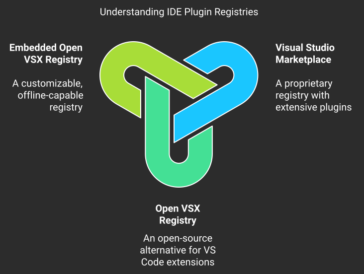
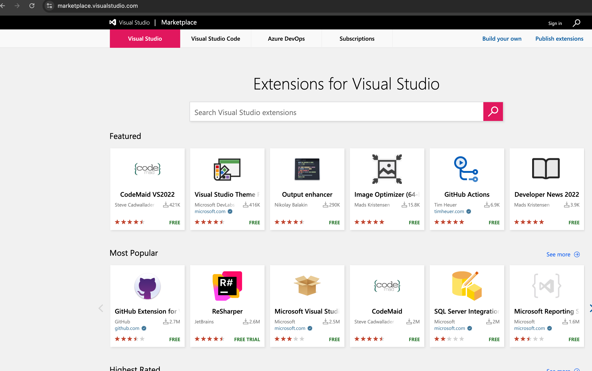
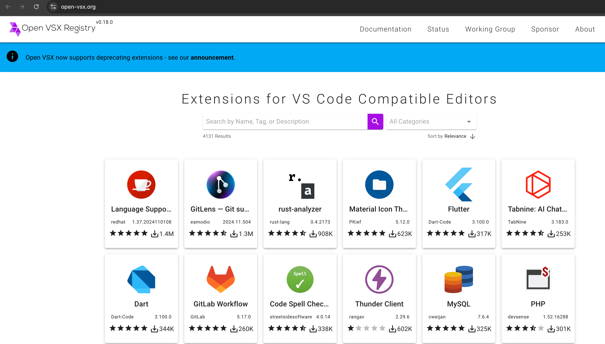
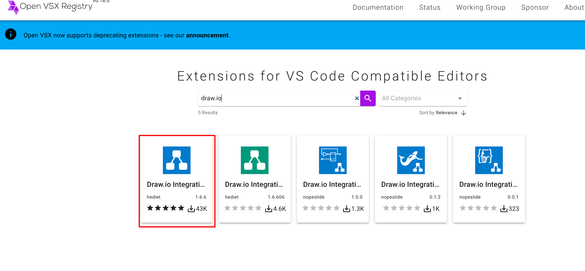
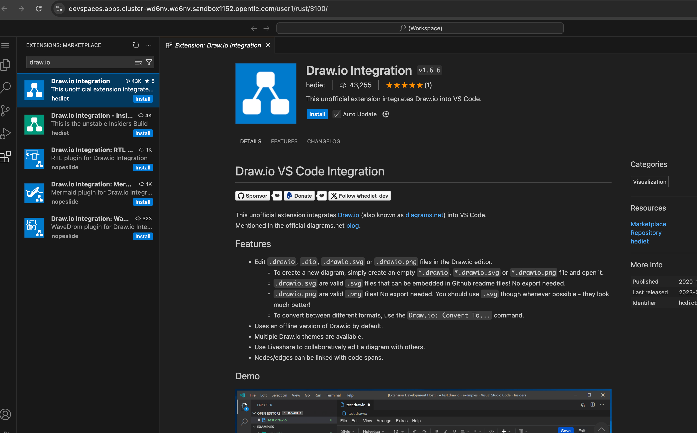
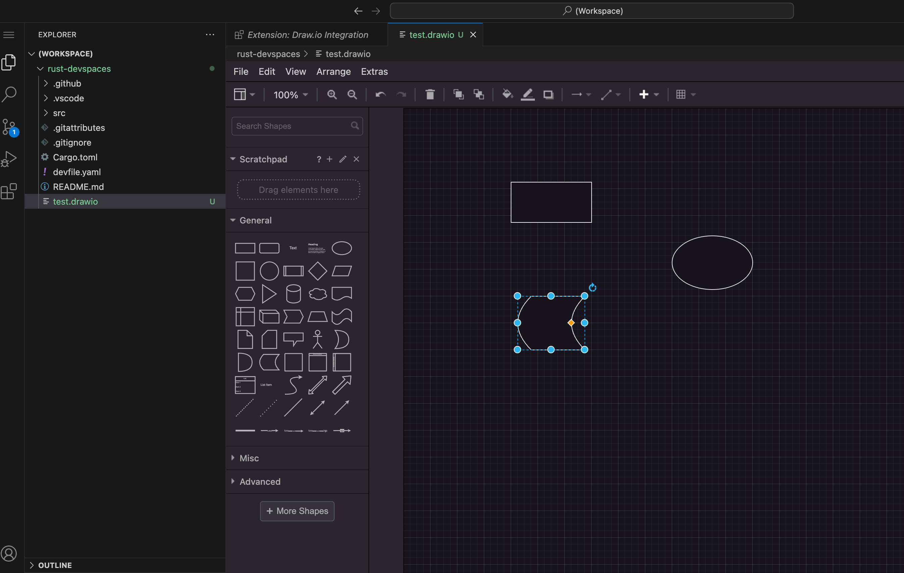

Open VSX Registries and IDE Extensions in Red Hat OpenShift Dev Spaces
IDEs such as Visual Studio Code are built around a lightweight core editor, with most functionality provided through extensions. Extensions are typically written in JavaScript or TypeScript and add support for programming languages, debuggers, source control integrations, diagramming tools, and many other capabilities.
Similar to how container images are distributed through container registries, IDE extensions are published through extension registries. These registries provide APIs that allow editors and IDEs to discover, install, and update extensions.
|
The terms plugin and extension are often used interchangeably. In modern Dev Spaces documentation, the term extension is preferred because it aligns with the Visual Studio Code ecosystem. |
For Visual Studio Code and compatible editors, extensions are commonly obtained from one of the following registries.

Visual Studio Marketplace (https://marketplace.visualstudio.com)

The Visual Studio Marketplace is operated by Microsoft and provides extensions for a wide range of open-source and commercial development tools. It contains the largest collection of Visual Studio Code extensions.
Although many extensions are available free of charge, the marketplace is a proprietary service governed by Microsoft’s licensing and distribution policies. Because of Microsoft’s licensing restrictions on the Visual Studio Marketplace service, Red Hat OpenShift Dev Spaces does not directly integrate with it as an extension source. Instead, Dev Spaces uses Open VSX registries for extension discovery and installation.
Open VSX Registry (https://open-vsx.org)

The Open VSX Registry is an open-source extension registry hosted by the Eclipse Foundation. It provides an open alternative to the Visual Studio Marketplace for Visual Studio Code-compatible editors and IDEs.
Open VSX is designed to be vendor-neutral and accessible to any editor that supports the Visual Studio Code extension model. It enables organizations and open-source projects to distribute and consume extensions without depending on Microsoft’s marketplace infrastructure or licensing terms.
Red Hat OpenShift Dev Spaces supports Open VSX registries as a source for IDE extensions. While the Open VSX Registry contains many popular extensions, its catalog is generally smaller than that of the Visual Studio Marketplace.
Embedded Open VSX Registry
By default, Red Hat OpenShift Dev Spaces deploys an embedded Open VSX registry that provides a curated subset of extensions synchronized from the public Open VSX Registry.
Organizations can also deploy and manage their own Open VSX registry within OpenShift to provide organization-approved extensions. This approach is particularly useful in disconnected, air-gapped, highly regulated, or proxy-restricted environments where access to external registries may be limited or prohibited.
A private Open VSX registry can contain a selected subset of extensions from the public Open VSX Registry, along with internally developed extensions that are specific to an organization.
|
Dev Spaces can be configured to use either the public Open VSX Registry or a privately managed Open VSX registry. In restricted environments, administrators typically deploy and maintain a curated Open VSX registry containing the extensions approved for use within their organization. |
Lab: Configuring Dev Spaces to Use the Public Open VSX Registry
In this hands-on lab, you will enable Dev Spaces to fetch plugins/extensions from the public Open VSX registry at https://open-vsx.org.
-
Log in to the OpenShift cluster as the
adminuser using theocCLI.$ oc login -u admin OpenShift_API_URL -
Verify that an embedded extension registry instance is running in the cluster
$ oc get pods -n openshift-devspaces NAME READY STATUS che-gateway-6757dcd74f-z6798 4/4 Running devspaces-587dc9fbdd-vzr75 1/1 Running devspaces-dashboard-d78c7fbdd-t2fvf 1/1 Running ... plugin-registry-b7fc7456c-96csx 1/1 Running -
Verify that Dev Spaces uses the default embedded Open VSX registry. The default extension registry is configured in the
devspacesCheCluster CR YAML resource.$ oc get checluster/devspaces \ -n openshift-devspaces \ -o jsonpath='{.spec.components.pluginRegistry.openVSXURL}' ' 'If the openVSXURLattribute is empty, Dev Spaces uses the default embedded Open VSX registry deployed within the cluster. If this field contains a URL, Dev Spaces retrieves extensions from the specified Open VSX registry. -
Log in to the Dev Spaces dashboard as the
user1user, and create a workspace. -
Search for an extension, for example, the
draw.io Integrationextension. This extension does not exist in the internal extension registry. You should see a message that saysNo extensions found. -
Go to https://open-vsx.org, and search for the
draw.ioextension.
Figure 4. Search for draw.io plugin -
The limited set of extensions available in the embedded extension registry is configured in a JSON file at https://github.com/redhat-developer/devspaces/blob/devspaces-3.27-rhel-9/dependencies/che-plugin-registry/openvsx-sync.json. You can also check the list of extensions from the OpenShift web console by accessing the terminal in the
plugin-registrypod, and then viewing the JSON file in the container at the location/openvsx-server/openvsx-sync.json.Replace the devspaces-3.27-rhel-9branch name with the branch corresponding to the version of Dev Spaces deployed in your environment. You can identify available branches in the Red Hat Dev Spaces GitHub repository. -
Stop the running workspace from the dashboard.
-
Change the
.spec.components.pluginRegistry.openVSXURLattribute and point it to the public Open VSX website.$ oc patch checluster/devspaces \ -n openshift-devspaces \ --type='merge' \ -p '{"spec":{"components":{"pluginRegistry": {"openVSXURL": "https://open-vsx.org"}}}}' checluster.org.eclipse.che/devspaces patched -
Restart the previously stopped workspace.
-
Search for the
draw.io Integrationextension again. You should now see the extension listed in the Extensions view. ClickInstallto install it in the running workspace.
Figure 5. Draw.io extension in Workspace. -
Switch back to explorer mode and create a new file named
test.drawioat the root of the project. The extension’s Drawing palette opens up. You should be able to create diagrams from within the workspace.
Figure 6. Draw.io diagram -
(Optional) Restore the original configuration to use the embedded Open VSX registry.
$ oc patch checluster/devspaces \ -n openshift-devspaces \ --type='merge' \ -p '{"spec":{"components":{"pluginRegistry": {"openVSXURL": "https://open-vsx.org"}}}}' checluster.org.eclipse.che/devspaces patchedDelete the workspace from the Dev Spaces dashboard.